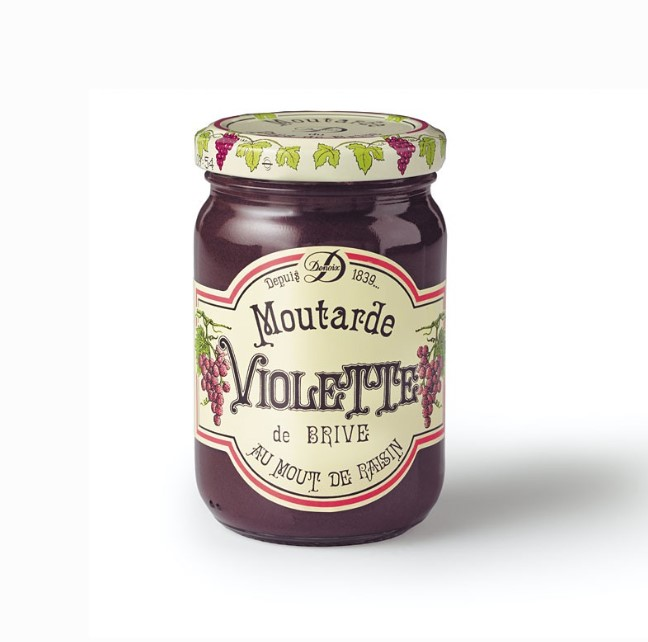
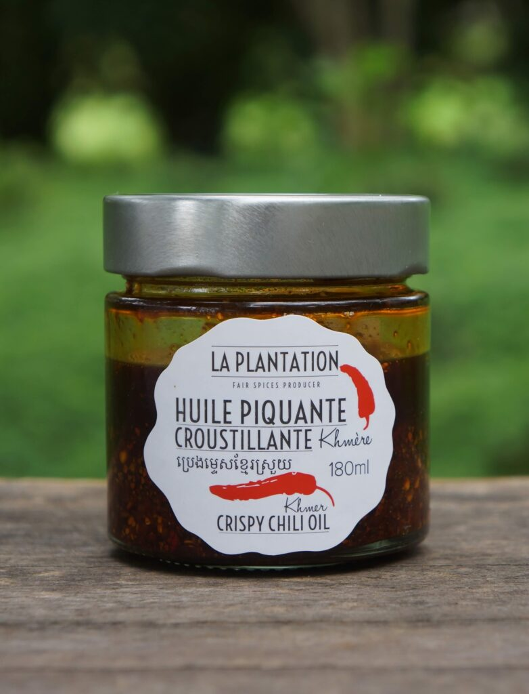
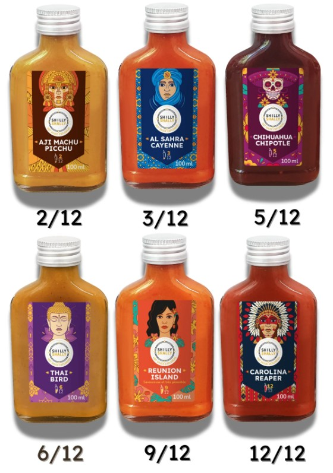
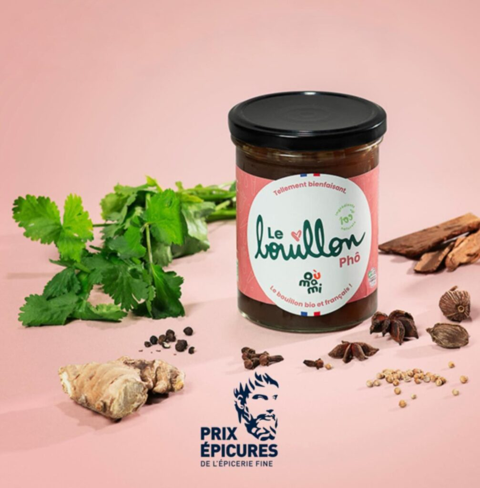
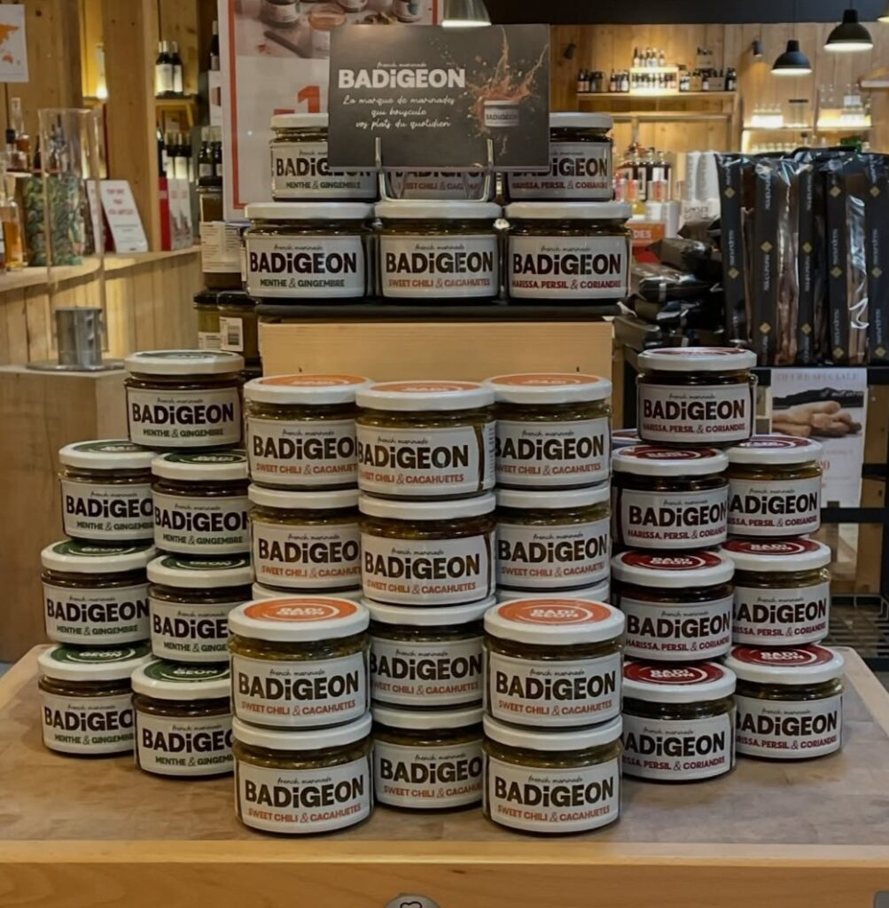
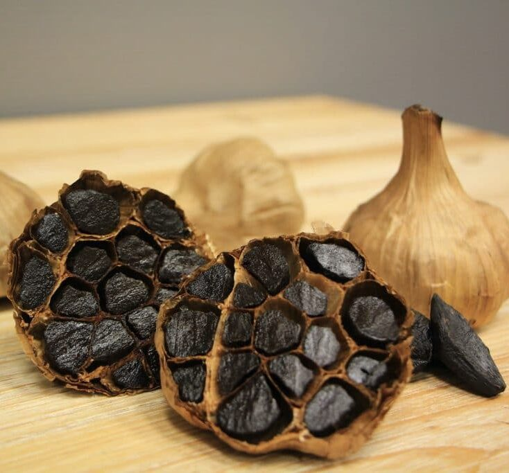
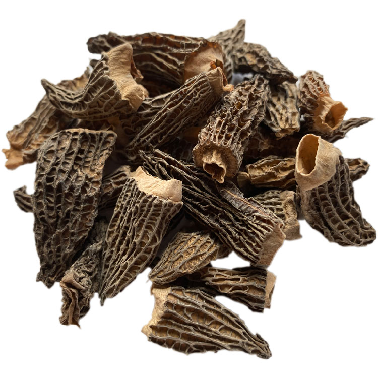
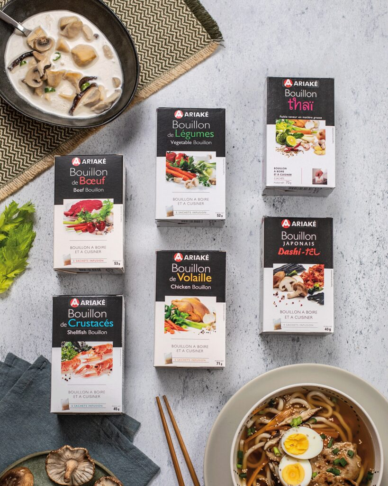

Moutarde Violette de Brive
La Maison Denoix fabrique avec du moût de raisin et des graines fines de moutarde cette moutarde violette unique, qui se distingue par sa saveur à la fois douce et épicée.
Huiles & saveurs
Vous trouverez chez nous de grands classiques d’accompagnements, des ingrédients indispensables pour vos recettes, allant de l’ail noir aux morilles séchées de Patagonie, mais aussi des moutardes originales et intenses et notre dernier coup de cœur : les Marinades Badigeon qui vont vous faire redécouvrir cette technique culinaire pour sublimer vos plats !

Une sélection de 12 produits parmi nos références en boutique

La Maison Denoix fabrique avec du moût de raisin et des graines fines de moutarde cette moutarde violette unique, qui se distingue par sa saveur à la fois douce et épicée.

Des cornichons 100 % français, sans herbicide, sans insecticide, sans conservateur.Ils sont cultivés, cueillis à la main et conditionnés avec soin à Chemilly-sur-Yonne.

Un héritage asiatique revisité à la cambodgienne ! En Asie, la chili oil est une véritable tradition. La Plantation s’en est inspirée pour créer avec les épices emblématiques du Cambodge une huile piquante croustillante, intense et authentique.

Embarquez pour une escapade surprenante avec cette collection de sauces piquantes et gourmandes, de force croissante et au profil très différent. A la fois riches en saveur et fruitées, ces sauces donnent du caractère à vos plats.

Une gamme de 5 bouillons d’os sains, avec 100% d’ingrédients français, 80% d’os et riches en collagène naturel à consommer nature ou à utiliser en cuisine. 5 recettes au choix : Recette tradition, poule curcuma, Pho, légumes ou Tonkotsü Ramen
Disponibles en 37 cl

La nouvelle marque de marinades artisanales et audacieuses qui vous invite à badigeonner vos viandes, poissons, légumes avec des saveurs venues d’ailleurs. 4 recettes au choix : Gingembre & Menthe – Harissa, Persil & Coriandre – Sweet Chili & Cacahuètes – Chimichurri & Xérès
Quand la Plantation Fairspices s’associe à la Maison Clarance, c’est un mariage unique entre des épices cambodgiennes fraîchement moulues et des graines de moutardes françaises soigneusement sélectionnées. Une collection de 5 moutardes : piments oiseaux, 3 poivres de Kampot, Curcuma, Curry rouge Khmer & Curry vert Khmer

Une moutarde 100 % francilienne fabriquée dans la Plaine de Versailles à Saint-Lambert-des-Bois. Un produit naturel sans conservateur, ni additif fait dans la plus pure tradition par un agriculteur passionné comme nous les aimons. 2 recettes au choix : Forte en grains ou au miel.

L’ail blanc IGP de la Drôme est transformé, selon le savoir-faire japonais, en ail noir par une longue cuisson basse température qui lui procure un goût délicat et savoureux. A utiliser soit écrasé, mixé ou encore en lamelles pour donner du peps et de la fantaisie à vos pâtes, fromages ou purées de pommes de terre.
La sauce yuzu ponzu Umami est un subtile mélange de sauce soja, dashi et jus de yuzu qui apportera un goût à la fois riche et frais à vos poissons ou St-Jacques mais accompagnera aussi les gyozas ou les sashimis.

Tout au long de l’année, vous pourrez retrouver en boutique nos morilles séchées en provenance de Patagonie et nos cèpes séchés de Toscane pour sublimer vos viandes, vos volailles ou vos risottos

ARIAKÉ a créé une nouvelle génération de bouillons, présentés en sachets, à infuser : Volaille, légumes, bœuf et crustacés. Ces bouillons riches en matières premières nobles sont sans exhausteur de goût, sans colorant, sans conservateur, faiblement dosés en sel avec des qualités nutritionnelles préservées.